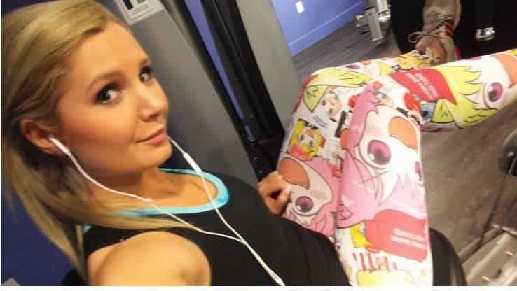

< < < Back
Is Lauren Southern A Brave Culture Warrior Or Merely Profiting Off Male Thirst? – Return Of Kings
Female pundits, what my colleague Michael Sebastian describe as “pundithots,” have appeared recently in alternative media. By showcasing attractive women, men in charge of alternative news companies applied basic corporate logic: more cleavage = more viewers = more money. Examples of this strategy include Tomi Lahren and Faith Goldy, though none have gotten as much coverage in our neck of the woods as Lauren Southern.
Lauren and the migrant boat in Sicily

Before the event on the Sicilian Coast.
Southern is a live action reporter and was present during numerous feminist rallies and events such as the “Battle of Berkeley” and the Paris’ Mayday antifa protests. Her last video created a bit of a racket as she joined Génération Identitaire in their trip to Sicily where NGOs illegally bring in thousands of African migrants by boat.
Génération Identitaire used a smaller boat to approach one of those freighters and attempted to block their way in the port, lighting flares to be seen in the night.
The mainstream media and their allies were once more dishonest and attacked Southern by saying that because they used a flare at night, they tried to torch the boat (with its keel made of metal) and the “children” inside, when we all know that those migrants are almost entirely composed of military-age Muslim men.
Southern and members of G.I. were arrested by the Italian coast guards and quickly released. The migrant freighter still reached the port. My question is this: what was the goal of Lauren Southern apart from publicity?
The reason for her earlier success
With her normal frame (not obese) and feminine body and face (would give her a high 7 with makeup), the Alt Right base was an untapped reservoir of male attention and profit for females like her. When you see what the average American woman looks like today, you can see why some betas would elevate Southern to the status of living goddess.
She started working for Ezra Levant’s The Rebel about two years ago. With the recruitment of Faith Goldy and Lauren Southern, Ezra Levant was aiming at bringing around more viewers from the general public in the alternative media spectrum.
Lauren left in March 2017 to go independent. She wanted her reporting to remain “unfiltered” (disagreement with her boss on how to report on certain questions and topics?), and continue to do what “she loves to do for her audience”.
She might also have noticed that showing a bit more flesh and receiving direct financial contribution through Patreon or Paypal by men on the Internet is more lucrative than working longer hours for the middle man Rebel Media.

Where the rubber hits the road
She has been able to garner so much male attention through her constant presence online, particularly on Twitter and on Instagram, gathering hundreds of thousands of male followers. She never misses an occasion to show herself in suggestive poses and revealing clothing.

She has been fairly candid about her enjoyment of the thirst and the attention her followers gave her.
If there was a moment in the 2016 U.S. election that epitomized this newfound hate for the young on the right, it was Republican consultant Rick Wilson’s infamous… declaration that Trump supporters were “childless, single losers who masturbate to anime.” Guilty as charged. Well, except I don’t masturbate to anime characters. I dress up like them and guys masturbate to me. (source)
But she stopped being tender with some of her viewers when the harder Alt Right saw past the attention-seeking and starting asking questions, especially on themes that revolved around race realism, white genocide, and Jews.
Once she saw the niche, she applied her female logic to it and marketed herself by surfing on her target audience’s specific references: cosplay pictures in tight clothing, anime enthusiasm, running in wheat fields, Deus Vult, Pepe, etc. She saw an opportunity to make money from the momentum and seized it.

While she has some fair arguments and has been honest about her own objectification, she is not as receptive as before when people point out that particular issue.
On ne peut pas tout avoir

I cannot blame her for making money out of male attention if she is honest about it. She has shown so far that she is on our side against the cultural decline—there is no question about that matter. But it must be seared in everyone’s mind that this struggle is a man’s world and change will be brought by men.
No matter how honest her heart and her intentions, Lauren is a woman and will therefore act as such. They are brought on board or invite themselves through their physical appeal and stay if there is a constant supply of attention. Adding my own two cents, I would encourage movements like Génération Identitaire to do a bit less Lauren Southern and more openings of identitarian fitness and boxing clubs like this awesome one in Lyon:
Read More: Stop Worshipping Women On The Internet